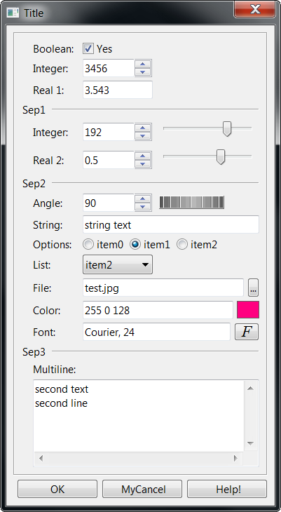

Shows a modal dialog for capturing parameter values using several types of controls.
int IupGetParam(const char* title, Iparamcb action, void* user_data, const char* format,...); [in C] iup.GetParam(title: string, action: function, format: string,...) -> (status: number, ...) [in Lua]
title: dialog title.
action: user callback to be called whenever a parameter value was changed,
and when the user pressed the OK button. It can be NULL.
user_data: user pointer repassed to the user callback.
format: string describing the parameter
...: list of variables address with initial values for the parameters.
Returns: a status code 1 if the OK button is pressed, 0 if the user canceled or if an error occurred. The function will abort if there are errors in the format string as in the number of the expected parameters. In Lua, the values are returned by the function in the same order they were passed.
int function(Ihandle* dialog, int param_index, void* user_data); [in C]
luafunction(dialog: ihandle, param_index: number) -> (ret: number) [in Lua]
dialog: dialog handle
param_index: current parameter being
changed. It is -1 if the user pressed the OK button. It is -2 when the dialog is
mapped, just before
shown. It is -3 if the user pressed the Cancel button.
user_data: a user pointer that is passed in the function call.
Returns: You can reject the change or the OK action by returning 0 in the callback, otherwise you must return 1.
You should not programmatically change the current parameter value during the callback. On the other hand you can freely change the value of other parameters.
Use the dialog attribute "PARAMn" to get the parameter "Ihandle*", but not that this is not the actual control. Where "n" is the parameter index in the order they are specified starting at 0, but separators are not counted. Use the parameter attribute "CONTROL" to get the actual control. For example:
Ihandle* param2 = (Ihandle*)IupGetAttribute(dialog, "PARAM2");
int value2 = IupGetInt(param2, IUP_VALUE);
Ihandle* param5 = (Ihandle*)IupGetAttribute(dialog, "PARAM5");
Ihandle* ctrl5 = (Ihandle*)IupGetAttribute(param5, "CONTROL");
if (value2 == 0)
{
IupSetAttribute(param5, IUP_VALUE, "New Value");
IupSetAttribute(ctrl5, IUP_VALUE, "New Value");
}
Since parameters are user controls and not real controls, you must update the control value and the parameter value.
Be aware that programmatically changes are not filtered. The valuator, when available, can be retrieved using the parameter attribute "AUXCONTROL". The valuator is not automatically updated when the text box is changed programmatically. The parameter label is also available using the parameter attribute "LABEL".
For the dialog:
"PARAMn" - returns an IUP Ihandle* representing the nth parameter, indexed
by the declaration order not couting separators.
"OK" - returns an IUP Ihandle*, the main button.
"CANCEL" - returns an IUP Ihandle*, the close button.
For a parameter:
"LABEL" - returns an IUP Ihandle*, the label associated with the parameter.
"CONTROL" - returns an IUP Ihandle*, the real control associated with the parameter.
"AUXCONTROL" - returns an IUP Ihandle*, the auxiliary control associated with the
parameter (only for Valuators).
"INDEX" - returns an integer value associated with the parameter index.
IupGetInt can also
be used.
"VALUE" - returns the parameter value as a string, but
IupGetFloat and IupGetInt
can also be used.
In Lua, to retreive a parameter you must use the following function:
IupGetParamParam(dialog: ihandle, param_index: number)-> (param: ihandle) [in IupLua3] iup.GetParamParam(dialog: ihandle, param_index: number)-> (param: ihandle) [in Lua]
dialog:
Identifier of the
dialog.
param_index: parameter to be retrieved.
The format string must have the following format, notice the "\n" at the end
"text%x[extra]{tip}\n", where:
text is a descriptive text, to be placed to the left of the entry field in a label.
x is the type of the parameter. The valid options are:
b = boolean
(shows a True/False toggle, use "int" in C)
i = integer (shows a integer number filtered text
box, use "int" in C)
r
= real (shows a real number filtered text box, use "float" in C)
a = angle in degrees (shows
a real number filtered text box and a dial [if IupControlsOpen is
called], use "float" in C)
s
= string (shows a text box, use "char*" in C, it must have
room enough for your string)
m
= multiline string (shows a multiline text box, use "char*" in
C, it must have room enough for your string)
l = list
(shows a dropdown list box, use "int" in C for the zero based item index selected)
t = separator
(shows a horizontal line separator label, in this case text can be an empty string)
f = string (same as s, but also show a button
to open a file selection dialog box)
c = string (same as s, but also show a color button
to open a color selection dialog box)
extra is one or more additional options for the given type
[min,max,step]
are optional limits for integer and
real types. The maximum and step values can be omited. When
min and max are specified a valuator will also be added to
change the value. To specify step, max
must be also specified. step is the size of the increment.
[false,true]
are optional strings for boolean
types. The strings can not have commas ',', nor brackets
'['
or ']'.
mask is an optional mask for the
string
and multiline types. The dialog uses the
MASK
attribute internally. In this case we
do no use the brackets '[' and ']' to avoid confusion with the specified
mask.
|item0|item1|item2,...| are the items of the list. At least
one item must exist. Again the brackets are not used to increase the possibilities for the strings, instead you
must use '|'. Items index are zero based start.
[dialogtype|filter|directory|nochangedir|nooverwriteprompt] are
the respective attribute values passed to the
IupFileDlg control when activated. All commas must exist, but you can let
empty values to use the default values. No mask can be set.
tip is a string that is displayed in a TIP for the main control of the parameter. (since 3.0)
There is no extra parameters for the color string. The mask is automatically set to capture 3 or 4 unsigned integers from 0 to 255 (R G B) or (R G B A) (alpha is optional).
The number of lines in the format string ("\n"s) will determine the number of required parameters. But separators will not count as parameters.
The dialog is resizable if it contains a string, a multiline string or a number with a valuator. All the multiline strings will increase size equally in both directions.
The dialog uses a global attribute called "PARENTDIALOG" as the parent dialog if it is defined. It also uses a global attribute called "ICON" as the dialog icon if it is defined.
Here is an example showing many the possible parameters. We show only one for each type, but you can have as many parameters of the same type you want.
// initial values
int pboolean = 1;
int pinteger = 3456;
float preal = 3.543f;
int pinteger2 = 192;
float preal2 = 0.5f;
float pangle = 90;
char pstring[100] = "string text";
char pcolor[100] = "255 0 128";
int plist = 2;
char pstring2[200] = "second text\nsecond line";
char pfile_name[500] = "test.jpg";
if (!IupGetParam("Title", param_action, 0,
"Boolean: %b[No,Yes]{Boolean Tip}\n"
"Integer: %i{Integer Tip}\n"
"Real 1: %r{Real Tip}\n"
"Sep1 %t\n"
"Integer: %i[0,255]{Integer Tip 2}\n"
"Real 2: %r[-1.5,1.5]{Real Tip 2}\n"
"Sep2 %t\n"
"Angle: %a[0,360]{Angle Tip}\n"
"String: %s{String Tip}\n"
"List: %l|item1|item2|item3|{List Tip}\n"
"File: %f[OPEN|*.bmp;*.jpg|CURRENT|NO|NO]{File Tip}\n"
"Color: %c{Color Tip}\n"
"Sep3 %t\n"
"Multiline: %m{Multiline Tip}\n",
&pboolean, &pinteger, &preal, &pinteger2, &preal2, &pangle, pstring, &plist, pfile_name, pcolor, pstring2, NULL))
return IUP_DEFAULT;

IupScanf, IupGetColor, IupMask, IupVal, IupDial, IupList, IupFileDlg.